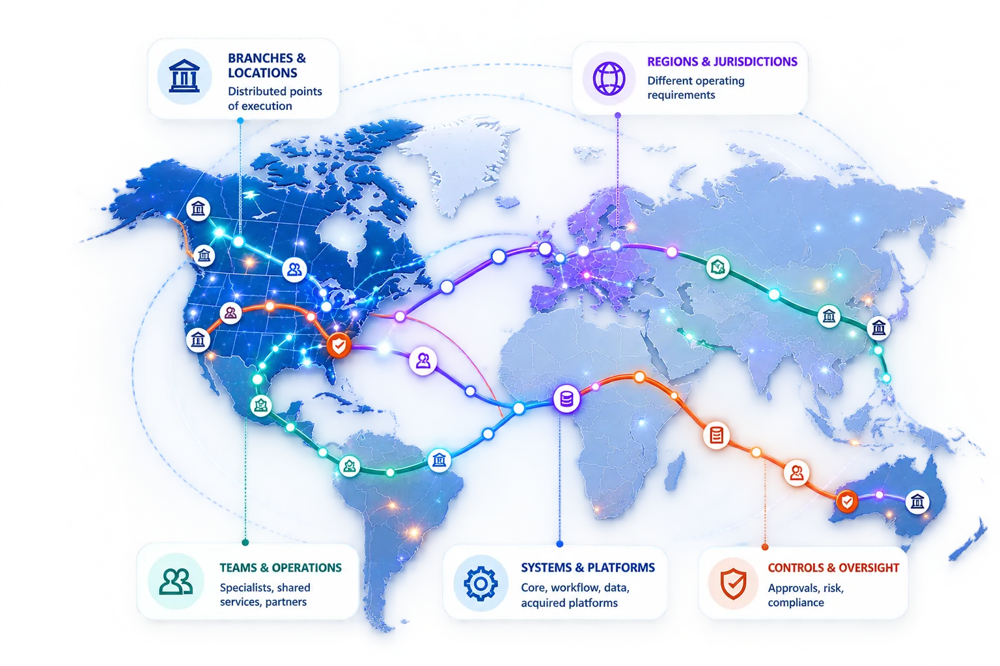
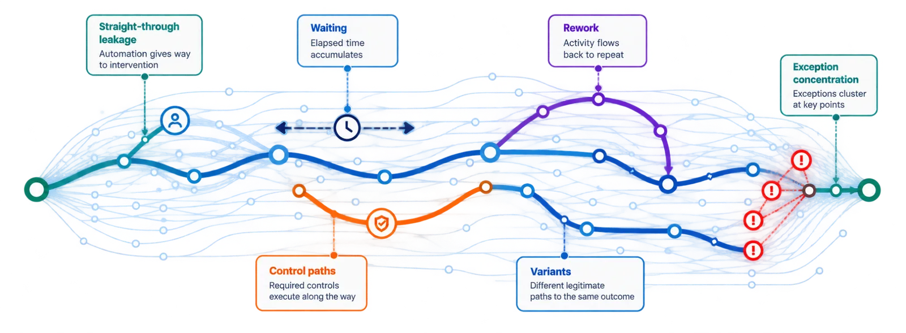

Your bank operates atenterprise scale.Execution crossesboundaries no singlesystem can see.

Your bank already has the data. The execution story is still fragmented.
Large banks do not lack systems, analytics or governance. The challenge is that each capability sees a different part of the operating reality.
Transactions, status and operational records.
Application health, work queues and technical states.
KPIs, outcomes, trends and management reporting.
Policies, approvals, audit evidence and regulatory views.
Systems, ownership and dependencies.
ContextWhat actually happened
Complexity is not the problem. Unexplained complexity is.
At enterprise scale, not every different path is waste. Some variation is required. Some intervention protects the bank. Some friction simply accumulated over time.
Different for a reason.
Product, geography and regulatory requirements can legitimately change how work executes.
Human or control steps that matter.
Reviews, approvals and specialist decisions may be necessary to manage risk and protect outcomes.
Complexity that adds no value.
Waiting, rework, repeated handoffs and avoidable exceptions consume time and capacity at scale.
See whether enterprise change actually improves execution.
Modernization can change technology, operating models and automation at enormous scale. RE-ViVE keeps the execution evidence visible before, during and after change.
See the baseline.
Understand actual paths, intervention, controls, waiting and variation before redesign begins.
See execution shift.
Compare old and new paths as systems, teams, automation and controls transition.
Measure what improved.
Validate whether the new operating model reduced friction, strengthened control or increased straight-through execution.
Turn enterprise execution into measurable action.
Once execution is connected end to end, the bank can measure where performance, control and operating consistency are being gained—or lost.

Use enterprise scale as an advantage.
When execution becomes visible across boundaries, large banks can make transformation, automation and control decisions with greater precision.
Automate with confidence
Know which paths are stable enough to automate—and where intervention remains necessary.
Standardize intelligently
Separate justified regional or product variation from avoidable operating inconsistency.
Prioritize transformation
Focus change investment on execution patterns with the greatest scale and operational impact.
Strengthen enterprise control
Understand how controls actually execute across systems, teams, geographies and business lines.
See the execution story your enterprise systems cannot show alone.
Start with one high-impact banking workflow and reveal how it actually executes across the enterprise.